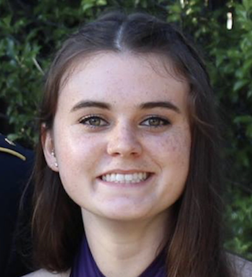

About Me
Biomedical Engineering graduate currently in the process of earning a certificate in Full Stack Development from the University of Texas at Austin. Developing skills in JavaScript, jQuery, React, and Node.js.
I demonstrated client and server-side JavaScript skills in a recent group project where I worked in a team of four to develop a RESTful web application which allows homeowners to communicate with trick-or-treaters about what types of candy they plan on handing out.
Excited to leverage skills in the future as part of a fast-paced, quality-driven team in order to build better experiences on the web.
My resume can be found here